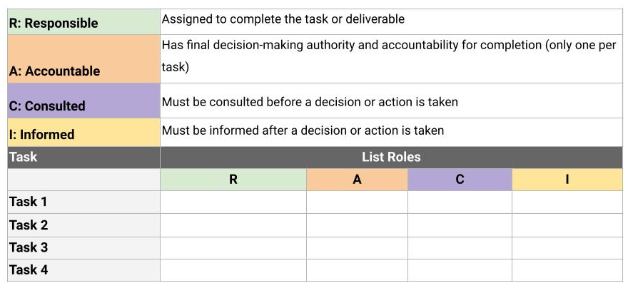

RACI Matrix
A RACI chart can be an extremely effective way to define project roles, give direction to each team member and stakeholder, and ensure work gets done efficiently. Having a RACI chart available throughout the duration of your project as a quick visual can be invaluable. In this reading, we will cover the function of a RACI chart and its components and explore how project managers use RACI charts to define and document project roles and responsibilities.
Elements of a RACI chart A RACI chart creates clear roles and gives direction to each team member and stakeholder. Over your career, you may hear a RACI chart referred to as a Responsibility Assignment Matrix (RAM), RACI diagram, or RACI matrix. The ultimate goal of this chart is to clarify each person’s role on your project.
First, let’s break down each of the roles people can be assigned:
R: Responsible: who gets the work done
A: Accountable: who makes sure the work is done
C: Consulted: who gives input or feedback on work
I: Informed: who needs to know the outcome
Note that RACI charts can be organized in different ways, depending on personal preference, number of tasks being assigned, and number of people involved. In the previous video, we showed you one RACI chart format. The template below shows another way a typical RACI chart might be organized:

Responsible Individuals who are assigned the “responsible” role for a task are the ones who are actually doing the work to complete the task. Every task needs at least one responsible party. It’s a best practice to try to limit the number of team members assigned to a task’s responsible role, but in some cases, you may have more than one.
A couple of questions to ask yourself when determining which person or people should be placed in the responsible role for a given task are:
What department does the work fall under?
Who will perform the work?
It is helpful to evaluate the people on your team to determine the role that suits them. Remember that you may need to list roles rather than names, if some people take on more than one role.
Let’s dig deeper into our example with Office Green. Our task is to develop price points for the project, and the Financial Analyst will complete the work for this task. Therefore, we will list “Financial Analyst” in the responsible role for this task in the RACI chart.
A section of a RACI chart, where the Financial Analyst is in the "responsible" role Accountable The “accountable” person is responsible for making sure the task gets done. It is important to have only one individual accountable for each task. This helps clarify ownership of the task. The accountable person ultimately has the authority to approve the deliverable of the responsible party.
In order to determine who should be tagged as the accountable team member, consider:
Who will delegate the task to be completed?
Who will review the work to determine if the task is complete?
You may encounter a situation where the responsible party is also accountable, but where possible, it is helpful to separate these roles. Ensuring that accountability is not shared ensures that there is no confusion on who the ownership belongs to.
Continuing with our Office Green example, you have assigned the “accountable” role to the Head of Finance. The Head of Finance has to make sure the project stays in budget and makes a profit, so they have the ultimate authority over the price points for the product. Therefore, they will need to approve the Financial Analyst’s work on the task.
A section of a RACI chart, where the Head of Finance is in the "accountable" role Consulted Team members or stakeholders who are placed in the “consulted” role have useful information to help complete the task. There is no maximum or minimum number of people who can be assigned a “consulted” role, but it’s important that each person has a reason for being there.
Here are a few ways you can help identify who is appropriate for the role:
Who will the task impact?
Who will have input or feedback for the responsible person to help the work be completed?
Who are the subject matter experts (SMEs) for the task?
The consulted people will be in frequent, two-way communication with the responsible party, so it is key to make sure that the right people are in this role to help accomplish the task efficiently and correctly.
Back to the project at Office Green, we’ve got a “responsible” Financial Analyst and an “accountable” Head of Finance. Who else would need to provide input on the product’s price points? Whose decisions and feedback will directly affect the task? The Director of Product will need to be consulted on the matter, as they oversee all product offerings. This person will have information about potential changes to the product and how these changes might affect price points.
A section of a RACI chart, where the Director of Product is in the "consulted" role Informed Individuals who are identified as needing to be “informed” need to know the final decisions that were made and when a task is completed. It is common to have many people assigned to this category and for some team members to be informed on most tasks. Team members or stakeholders here will not be asked for feedback, so it is key to make sure people who are in this group only require status updates and do not need to provide any direct feedback for the completion of the effort.
Key questions to ask yourself in order to ensure that you have appropriately captured individuals in the “informed” role are:
Who cares about this task’s completion?
Who will be affected by the outcome?
Now that you’ve determined who is responsible, accountable, and consulted on the Office Green project task, it is time to determine who needs to be informed about the task. Your Financial Analyst has set the price points with input from the Director of Product, and the Head of Finance has approved. You will now need to inform the Sales Team about the final price points, as they will need this information to sell the product.
A section of a RACI chart, where the Sales Team is in the "informed" role Pro tip: You could end up with a large number of team members and stakeholders who are placed in the “informed” role. If so, make sure that you have a plan to keep them informed that is not labor-intensive. Something as easy as view-only access to your project plan or meeting notes could prevent you from having to create separate communications along the way.
Key takeaway The RACI chart is a valuable tool. It can help you define and document project roles and responsibilities, give direction to each team member and stakeholder, and ensure work gets done efficiently. A RACI chart can also help you analyze and balance the workload of your team. While it may take many revisions to make sure that your team members and stakeholders are being placed into the right roles in your RACI chart, doing this work up front helps save time and prevent miscommunications later on.